Your first sculpt in 10 minutes
Never sculpted before? In about ten minutes this lesson turns the default sphere into a little mushroom house: a glossy red cap with raised white spots, a round cream house under it, a wooden door and glowing windows. It ends with a render you can share. You only need the built-in brushes, a mouse (a pen tablet is nicer, but not required) and these twelve steps.

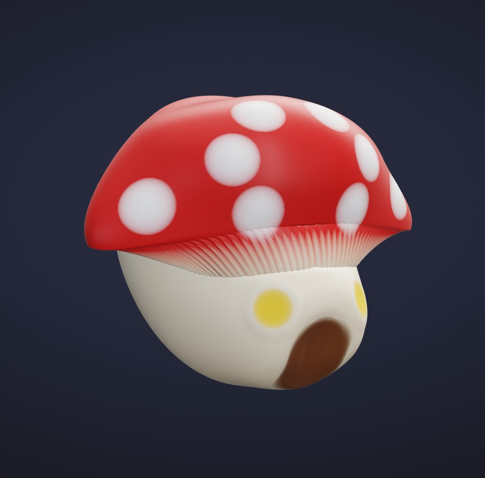
The lesson uses the default look: the SculptForge layout, with the menus File, Edit, Sculpt, Paint, Mesh, View, Render, Help along the top, a tool shelf under them, the brushes along the bottom and the Tool panel on the right. If you switched to the ZBrush-style layout, the ZBrush-style layout notes say where things are there. Every step can be undone with Ctrl+Z, so experiment freely.
1. Start with a sphere#
Goal: a fresh sphere, seen from the front.
- Press Ctrl+N (File > New Sphere).
- Press F to frame it. To look around: drag on the empty background to rotate, Alt + drag on the background to move the view, scroll to zoom. Press F again whenever you lose it.
- Check that X is lit on the tool shelf: symmetry is on, so everything you do on one side happens on the other.

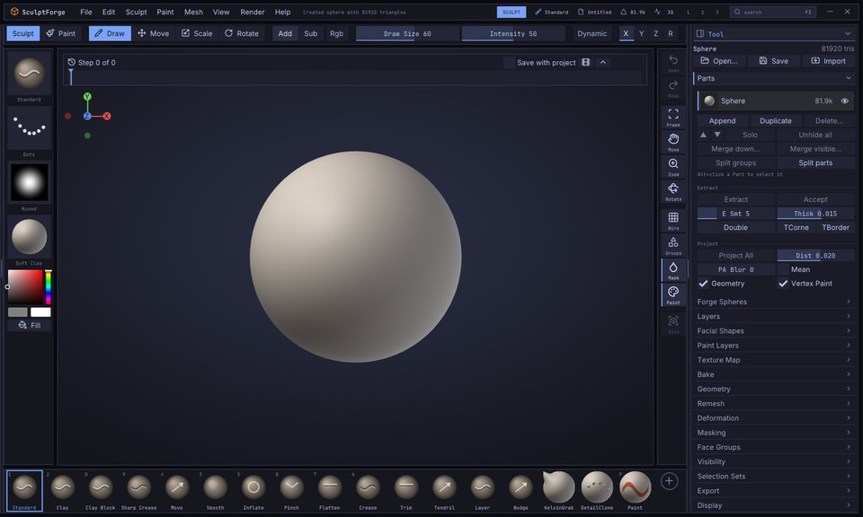
2. Mask the top, pull down the walls#
Goal: a taller house body under a round top.
- In the Tool panel on the right, open Masking and click Mask Rectangle.
- Hold Ctrl and drag a box from the empty background over the upper half of the sphere. The top turns dark: it is masked, and brushes leave it alone.
- Pick Move: press 4, or click Move on the bottom shelf. Press ] many times (or drag Draw Size on the tool shelf) until the brush circle is wider than the sphere.
- Drag from the bottom of the sphere straight down a little. The lower half stretches into walls.

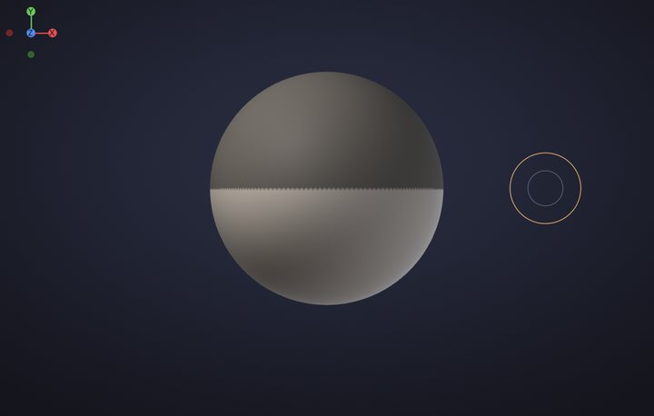

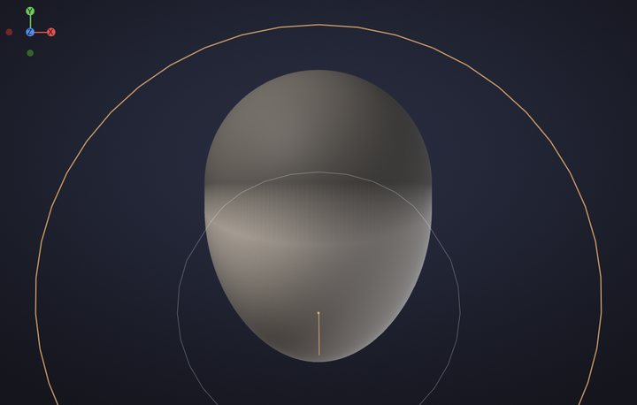
3. Colour the cap and the walls#
Goal: a red cap and cream walls, with a clean line between them.
- Open Paint. In Vertex Paint & Color, pick a warm cream in the colour wheel and click Fill. Fill paints what isn't masked: the walls.
- In Masking, click Invert: now the walls are masked.
- Open Paint again, click the red swatch, then Fill: the cap.

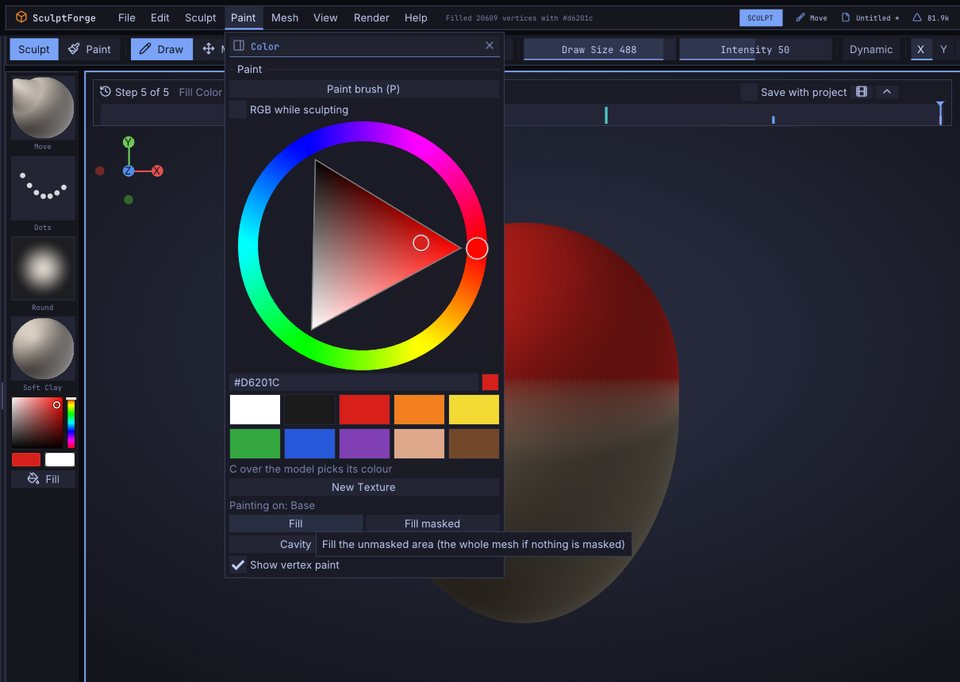
4. Pull out the cap#
Goal: a wide cap that hangs over the walls.
- In Masking, click Blur once: the mask's edge gets a little softer, so the cap bends smoothly.
- Keep Move and make the brush smaller with [, about half the sphere.
- Start just inside the sphere's left edge, right above the line, and drag out to the left and a little down. Symmetry pulls the right side too.
- Press down a little on the very top of the cap to flatten it.

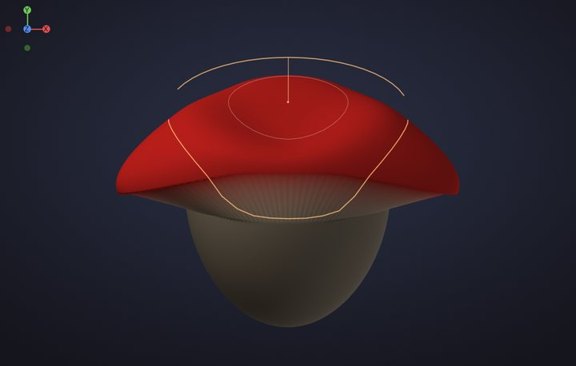
5. Round it out with Inflate#
Goal: a puffy dome and a round little house.
- Press Ctrl+Shift+A to clear the mask.
- Pick Inflate: press 5. Drag across the top of the cap twice, then across the lower walls twice.

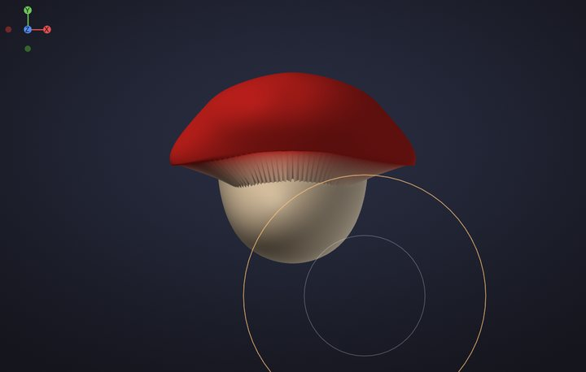
6. Divide twice#
Goal: enough polygons for crisp details and colours.
- Press Ctrl+D twice (Tool > Geometry > Divide). Each Divide makes four polygons out of every one and smooths the shape: about 1.3 million triangles now.

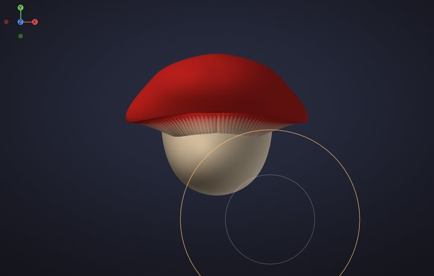
7. Cut a door#
Goal: a door with real depth.
- Pick Crease: press 6. Make the brush small with [.
- Drag up one side of the door, from the bottom of the wall, twice; symmetry cuts the other side. Then a short stroke over the top, towards the middle.
- Pick Clay: press 2. Hold Alt and drag up inside the door twice: Clay digs in.

8. Make round windows#
Goal: two framed windows.
- Keep Clay. Click twice (without dragging) beside the door, halfway up the wall: a round frame. Symmetry adds the second window.
- Make the brush smaller with [, hold Alt and click twice in the same spot: the glass sinks into the frame.

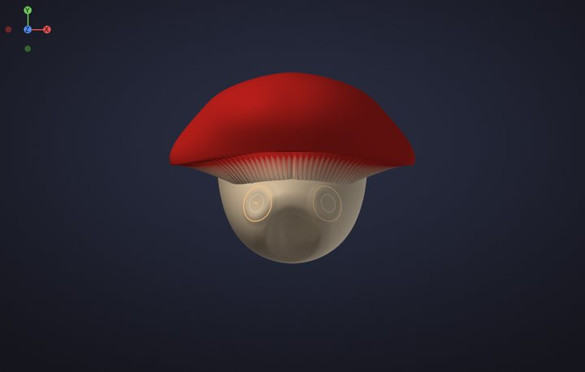
9. Raise the spots#
Goal: round bumps on the cap.
- Pick Inflate: press 5.
- Click three times on each spot: a few on each side of the cap and a couple near the top.

10. Paint the spots white#
Goal: crisp white spots.
- Press P (or click Paint on the tool shelf): the brush now paints colour without changing the shape.
-
Give it a hard edge: with the cursor over the canvas press O (Falloff), type
-70and press Enter. - Pick white and click once on every spot.

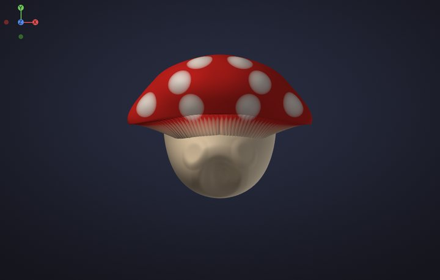
11. Paint the door and windows#
Goal: a wooden door and glowing windows.
- Pick a warm brown and paint inside the door.
- Pick a bright yellow, make the brush a little smaller with [, and click on the windows.
- Press P again to go back to sculpting.

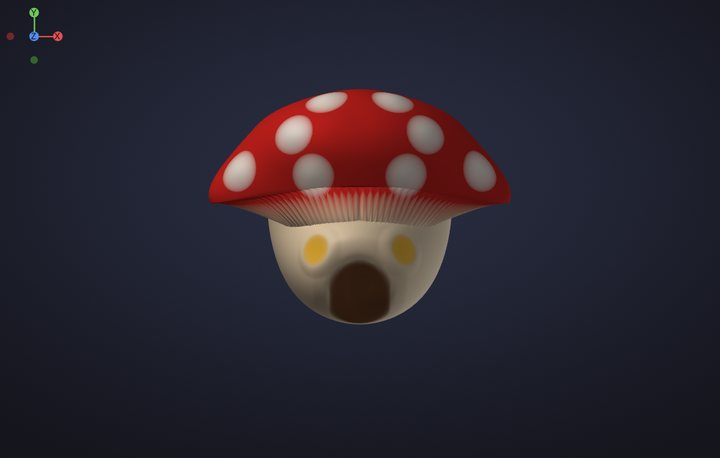
12. Shade it and save a render#
Goal: a picture of your sculpt to share.
- Press M over the canvas and click White: a clean material that shows your colours.
- Open Render > Materials and click PBR under Viewport Shading: studio lighting with soft reflections.
- Turn the view to a three-quarter angle, a little from above, and press F.
- Click Save Render at the bottom of Render > Materials. The status bar names the picture (twice the size of the view); find it under Library > Image.
- Press Ctrl+S to save the project.

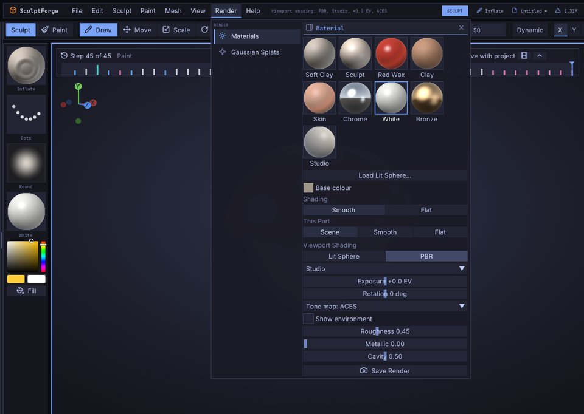
Well done: that's a sculpt, painted and rendered.
What's next#
- Share it in #show-your-sculpts on the SculptForge Discord. We'd love to see it.
- Try every brush and the keys that change them: Sculpting and brushes.
- Masks by lasso, rectangle and cavity: Masking.
- Paint layers, cavity paint and Lit Sphere materials: Vertex Paint and materials.
- Find your way around the menus and shelves: The interface.